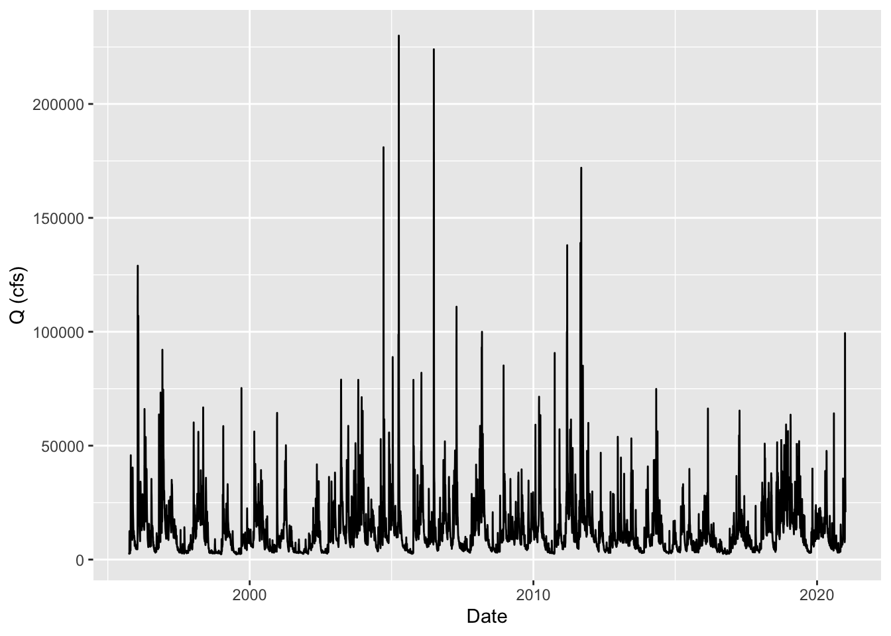

2 Methods
2.1 Watershed delineation
site_coords_db3 <- readNWISsite("01463500") %>%
st_as_sf(coords = c('dec_long_va', 'dec_lat_va'), remove= FALSE, crs = 4326) %>%
st_transform(crs = 4269)
dbae <- get_huc8(site_coords_db3[1,])
flowlines_db3 <- get_nhdplus(AOI = dbae,
realization = 'flowline')
catchments_db3 <- get_nhdplus(AOI = dbae,
realization = 'catchment') 2.2 Watershed map
watershed <- st_read('NJdata.geojson') %>%
dplyr::filter(id == 'globalwatershed' )
watershed
mapview(watershed)2.3 Data Acquisition
primary gage with discharge data and level data.
site_no <- "01463500"
q <- readNWISdv(siteNumbers = site_no,
parameterCd = '00060',
startDate = '1995-09-30',
endDate = '2021-01-01') %>%
rename(q_cfs = X_00060_00003)
sc <- readNWISdv(siteNumbers = site_no,
parameterCd = '00095',
startDate = '1995-09-30',
endDate = '2021-01-01') %>%
rename(sc = X_00095_00003)Dates of Data:
1912-10-01
2022-02-14
2.4 Data plot
ggplot(q, aes(x = Date, y = q_cfs)) +
geom_line() +
ylab('Q (cfs)')
The plot shows the discharge data in cfs for the Delaware river from 1995-09-30 to 2021-01-01. There is a lot of variation over the years that can be seen in this graph ranging from 0 to over 200,000 cfs.
write_csv(q,here('data','discharge.csv'))
write_csv(sc1,here('data',"spefcond1.csv"))
write_csv(sc2,here('data',"spefcond2.csv"))
write_csv(sc3,here('data',"spefcond3.csv"))